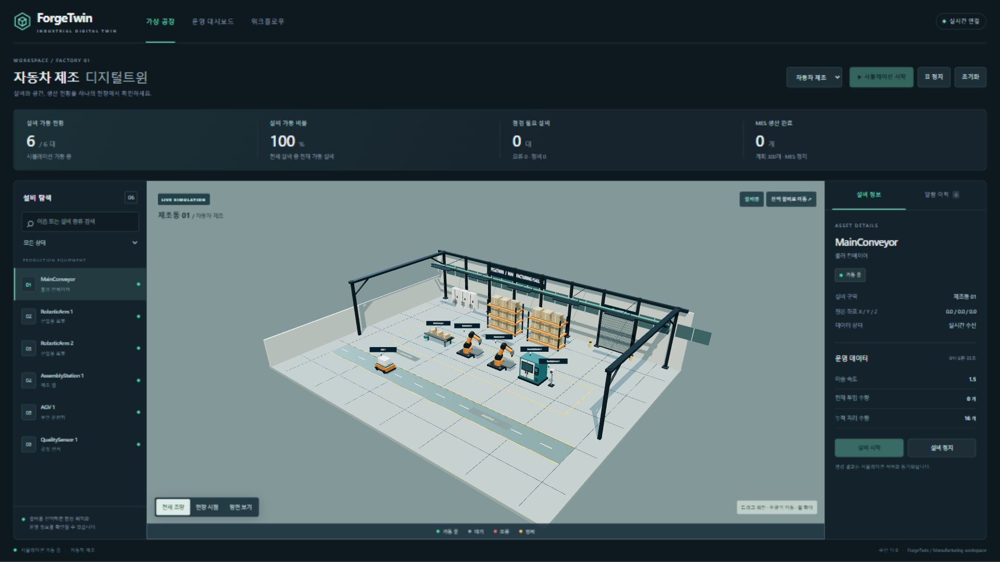

PLC Simulation
프로토콜 프레임과 레지스터 값을 생성하고 태그 읽기·쓰기를 재현합니다.
Modbus · MELSEC · FINS · S7 · MQTTTECHNICAL DOCUMENTATION · 2026
PLC 데이터 생성부터 Gateway 표준화, OPC UA 제공, MES와 3D Digital Twin 반영까지 세 제품의 실제 실행 흐름과 장애 처리 기준을 설명합니다.
00 · SYSTEM OVERVIEW
각 제품은 독립적으로 실행되지만 함께 연결하면 장비 신호의 생성, 표준화, 분석과 시각화를 담당하는 하나의 산업 데이터 플랫폼이 됩니다.
프로토콜 프레임과 레지스터 값을 생성하고 태그 읽기·쓰기를 재현합니다.
Modbus · MELSEC · FINS · S7 · MQTT장치 주소를 표준 경로로 만들고 품질, 알람, 이력과 OPC UA를 제공합니다.
Cache · Alarm · Historian · HA설비 데이터를 MES 지표, 실행 워크플로와 3D 공장 상태로 변환합니다.
SignalR · MES · Workflow · Three.js시뮬레이터가 실제 PLC 프로토콜 요청을 처리하고 값, 품질 코드와 타임스탬프를 만듭니다.
Gateway가 태그별 Scan Rate에 맞춰 값을 읽고 DataAccess.Channel.Device.Tag 경로로 정규화합니다.
하나의 실시간 캐시가 OPC UA 주소 공간, 한계 알람과 Historian의 공통 입력이 됩니다.
TwinForge가 OPC UA 값을 구독하고 Scale과 Offset을 적용해 대상 설비의 속성으로 변환합니다.
장비 이벤트가 SignalR을 거쳐 설비 카드, MES 지표와 3D 오브젝트를 동시에 갱신합니다.
01 · DEVICE CONNECTIVITY
제조사별 통신 구현을 DLL 플러그인으로 분리하고 DriverHost가 설정, 연결, 태그와 최신 값을 하나의 실행 모델로 관리합니다.

시작 시 공통 IPlcDriver 구현을 DLL에서 찾습니다. PLC 모델을 선택하면 프로토콜, 모델, 통신 모듈 기본값을 병합하고 드라이버를 재구성한 뒤 태그를 검색합니다.
MonitorBackgroundService가 활성 드라이버를 순회합니다. 연결이 끊긴 드라이버는 재연결하고, 발견한 태그 목록을 읽어 ID별 최신 값과 품질을 갱신합니다.
API가 태그 ID 또는 주소를 찾고 드라이버가 데이터 형식과 PLC 바이트 순서에 맞춰 값을 변환합니다. 성공 응답 뒤 캐시를 GOOD 품질로 갱신합니다.
/ws/monitor가 드라이버 상태, 태그 값, 데이터 매핑과 통신 로그를 전송합니다. 화면은 전체 새로고침 없이 연결 배지와 숫자를 갱신합니다.
한 드라이버의 통신 실패는 로그에 남기고 다른 드라이버 폴링은 계속합니다. 비활성 드라이버 쓰기와 존재하지 않는 태그 요청은 서버에서 거부하며, 다음 폴링 주기에 재연결을 시도합니다.
02 · EDGE INTEGRATION
Channel·Device·Tag 설정을 실제 통신으로 변환하고, 수집된 하나의 실시간 캐시를 OPC UA·알람·Historian이 공유합니다.

Channel이 드라이버를 선택하고 Device가 엔드포인트를, Tag가 PLC 주소, 형식, 권한과 Scan Rate를 정의합니다. Repository가 이 구성을 MySQL에 저장합니다.
Active 노드가 읽을 시점이 된 태그만 선택합니다. 드라이버 응답의 값, 품질, 형식과 Source Timestamp를 표준 DataAccess 경로에 저장합니다.
알람은 1초마다 HiHi·High·LoLo·Low를 평가하고 상태 전환 때만 이벤트를 냅니다. Historian은 최소 100ms 주기로 값을 샘플링합니다.
OPC UA가 계층형 주소 공간과 인증서 정책을 제공합니다. Active/Standby와 fencing token은 수집, 서버와 저장이 한 노드에서만 실행되도록 제어합니다.
DataAccess.Channel.Device.Tag 경로의 캐시에 기록합니다.PLC 읽기 실패 시 해당 태그를 Bad 품질로 바꾸어 오래된 값을 정상으로 오해하지 않게 합니다. Historian cache miss도 0으로 저장하지 않습니다. 설정 변경 신호가 발생하면 OPC UA 서버가 주소 공간을 다시 생성합니다.
03 · OPERATIONAL INTELLIGENCE
100ms 장비 시뮬레이션, OPC UA 외부 신호, MES와 실행 그래프를 하나의 장비 모델과 이벤트 경로에 연결합니다.

Industry Factory가 장비와 위치를 만들고 엔진이 각 장비의 Update를 호출합니다. 값, 위치, 상태와 알람 변경은 Event Bus에 발행됩니다.
이벤트를 WebSocket으로 받은 Zustand Store가 설비 카드와 3D Scene의 공통 상태를 갱신합니다. 최근 텔레메트리 20개와 알람 100개를 유지합니다.
우선순위에 따라 최대 2개 작업을 동시에 Release합니다. 공정 진행에 따라 양품, 불량, WIP, OEE와 스테이션 상태가 갱신됩니다.
노드를 연결 순서로 정렬하고 선행 Output을 후속 Input으로 전달합니다. 각 Executor의 Running, Success, Error 상태와 로그를 표시합니다.
value × scale + offset을 적용합니다.연결 실패, 초기값 대기와 형식 오류를 서로 다른 Bad 품질로 구분합니다. 외부 모드에서는 내부 시뮬레이션 Update가 수신 값을 덮어쓰지 않습니다.
04 · OPERATING REFERENCE
http://localhost:508811 drivers · 4 connected · 24 live tagshttp://localhost:5279Channel · Device · Tag · Alarm · OPC UAhttp://localhost:51736 equipment · MES · Workflow · 3D factoryGateway 설정 화면 일부는 인메모리 구성 모드에서 촬영했습니다. 알람·OPC UA 보안 화면은 Docker 통합 실행에서 검증한 자료이며, TwinForge 워크플로 캡처는 내장 실행 시뮬레이터의 성공 결과입니다.